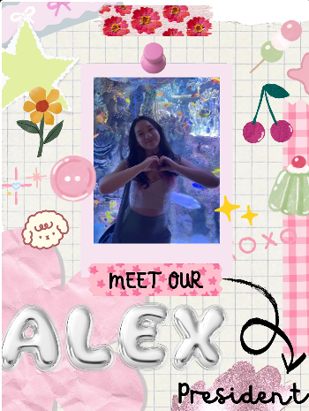
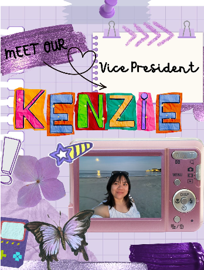
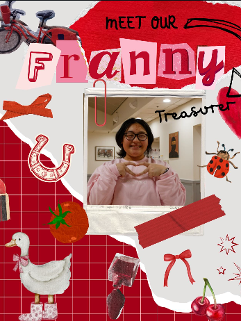
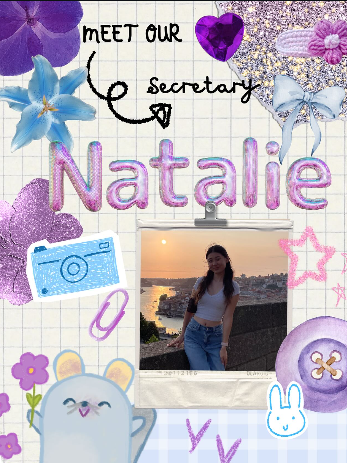
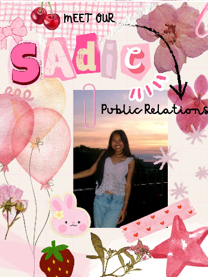
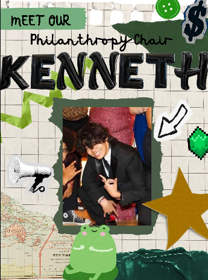
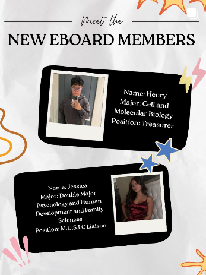

Insert text about ASA here

Alex is a Junior and she is majoring in Molecular Neuroscience with a minor in Sociology! 🧠📚 Some fun facts and hobbies of Alex is she loves horror movies, 😳 baking, 🍪🍰🧁 clay art, and she’s been a full and part time EMT for three years! 🚑🫀🩺🚨 This school year, Alex is really looking forward to fun times with ASA, renting a house with her roommates, and rounding out her minor! 🥰👯♀️

Kenzie is a Junior, majoring in Marketing! 📈👩🏻💻A fun fact about her is that she was born in Changsha, China! This school year she is most excited to meet our newest ASA members!!! 🤩🤗

Franny is a Junior, double majoring in Biomedical Engineering and Chinese! She also has a minor in biomedical and pharmaceutical sciences. 👩🏻🔬🧬🛠️ Fun fact: Franny has traveled to more countries than she has traveled states! 🛩️ Hobbies: Some of her hobbies include dancing, 💃 photography, 📸 and she’s a professional escape room artist 😏 This school year, she’s excited to get more involved in school and live off-campus with her friends! 🌟🫶🏽

Natalie is a Sophomore majoring in HDF (Human Development and Family Science) on a Pre-Health Track in PT! ☺️🩺🧠 Natalie loves photography, traveling, reading, baking, cooking, and hiking. 📸✈️📚👩🏻🍳🥾 Fun fact: She’s moved 5️⃣ times and her secret talent is making realistic dolphin noises! 🐬 She also knows Morse Code and has been to 1/4 of the USA! 🇺🇸🛬 This upcoming year she is most excited to give more tours throughout the year, expand ASA, and come up with fun events to bring more recognition to Asian Culture, as well as spending time with her suite mates!

Sadie is a Sophomore majoring in Medical Laboratory Science. 🧫🔬👩🏽🔬 During her free time, she loves bingeing Korean dramas, shopping, and reading! 📺🛍️📚 Fun facts: She is the oldest of 4️⃣ and is also a Peer Leader for the Center of Student Leadership Development. 🐏 This school year, she’s looking forward to all of the new opportunities to come, as well as meeting new people! She’s also excited to jump into ASA with the hopes of promoting Asian Culture in our community. 🤩

Ken is a Sophomore majoring in Biological Sciences on the Pre-Health track! 🩺🧬 Fun fact: He’s got a cat named Juni with SIX toes on each paw. 🐾🐱 This year, Ken’s most excited to embrace his chaotic sleep schedule. 😴📚☕

Give a warm welcome ❤️ to our new Treasurer 💸 (in training) and M.U.S.I.C Liaison 🎵🤝 for the 2026-2027 Year! 🙌🏽 ✨Some words from our newest eboard members: ✨ Henry: “Hi! My name is Henry. I am a freshman majoring in Cell and Molecular Biology or CMB. I will be your next treasurer for ASA. I am looking forward to meeting new people, participate and plan new fun events, and try new cultural food!” Fun fact: “I love playing volleyball, and in my free timeI like to watch kdramas and anime!” 🏐📺 ✨Jess: “My name is Jessica, I am a Sophomore double majoring in Psychology and HDF, and I’m your new M.U.S.I.C Liaison. Next year I am looking forward to seeing new faces at ASA!” Fun fact: “I went to Vietnam for five weeks over the Summer!” 😎 Henry and Jess, we are so excited to have you on the eboard next year and we can’t wait to see all the things you will do for ASA! ❤️🙌🏽